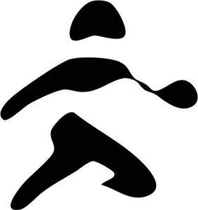

Trade Mark Journal No.2025/051 19 December 2025
UK00004291216 7 November 2025 (9,16,18,25,28,35,41)

- Class 9
- Ski helmets; Ski goggles; Snowboard helmets; Ski glasses; Water ski safety vests; Snow goggles; Sunglasses; Lenses for sunglasses; Clip-on sunglasses; Prescription sunglasses; Cases for eyeglasses and sunglasses; Frames for sunglasses; Sunglasses frames; Fashion sunglasses; Straps for sunglasses; Sunglass lenses; Chains for spectacles and for sunglasses; Chains for spectacles and sunglasses; Cords for sunglasses; Eyewear; Goggles; Sports glasses; Glasses for sports; Sports eyewear; Goggles for use in sports; Sports goggles; Sports (Goggles for -); Eyewear cases; Visors for helmets; Safety helmets; Headgear being protective helmets; Protective helmets; Skateboard helmets; Sports helmets; Protective helmets for sports; Protective helmets for use in sports; Sports (Protective helmets for -); Safety headgear; Sport bags adapted [shaped] to contain protective helmets; Safety goggles; Goggles for sports; Protective goggles; Helmets for bicycles; Protective headgear; Boxing helmets; Protective sports helmets; Downloadable posters.
- Class 16
- Stickers; Bumper stickers; Stickers [stationery]; Adhesive stickers; Stickers [decalcomanias]; Car stickers; Albums for stickers; Decorative stickers for helmets; Decorative stickers for cars; Vehicle bumper stickers; Sticker books; Decals; Sticker albums; Decorative stickers for soles of shoes; Sticker activity books; Cardboard badges; Wall decals; Appliques in the form of decals; Printed emblems [decalcomanias]; Adhesive printed labels; Lettering stencils; Adhesive notepads; Adhesive lettering; Stencils [stationery]; Self-adhesive tapes for stationery use; Cardboard hangtags; Adhesive-backed vinyl letters and numbers; Placards of cardboard; Adhesive labels of paper; Adhesive pads [stationery]; Cardboard labels; Printed emblems; Placards of paper or cardboard; Adhesive wall decorations of paper; Adhesive labels; Tapes (adhesive -) [stationery]; Paper badges; Floor decals; Labels of paper or cardboard; Paper emblems; Adhesive tape cutters being stationery; Stencils; Placards of paper; Printed cardboard invitations; Printed paper labels; Self-adhesive plastic sheets for lining shelves; Printed luggage labels; Paper hangtags; Glitter glue for stationery purposes; Wallpaper stencils; Adhesive foils stationery; Luggage tags of cardboard; Banners of paper; Commemorative stamps [seals]; Stencil plates; Paper banners; Die-cut paper shapes; Commemorative stamp sheets; Pencil ornaments [stationery]; Pencil ornaments (stationery); Adhesive-backed letters and numbers; Pins [stationery]; Thumbtacks [stationery]; Signboards of paper or cardboard; Glitter pens for stationery purposes; Printed paper signs; Advertising signs of paper or cardboard; Printed cards; Paper name badges; Adhesive packaging tapes; Stamps; Holders for stamps [seals]; Self-adhesive paper for notes; Labels of paper; Paper labels; Adhesive tape for stationery purposes; Gummed tape [stationery]; Posters; Bags [envelopes, pouches] of paper or plastics, for packaging; Self-adhesive tapes for stationery and household purposes; Self-adhesive tapes for stationery or household purposes; Removable self-stick notes; Paper luggage labels; Paper boxes for storing greeting cards; Adhesive tapes for stationery purposes; Decorations for pencils; Display banners of paper; Notepads; Holders for adhesive tapes; Wrappers [stationery]; Adhesive tape dispensers for household or stationery use; Covers for postage stamps; Glue pens for stationery purposes; Printed advertising boards of cardboard; Printed flyers; Seals [stamps]; Stamps [seals]; Coasters of cardboard; Commemorative postage stamps; Plastic bags for packing; Paper bags; Bags of paper; Paper bags and sacks; Paper for bags and sacks; Plastic shopping bags; Gift bags; Paper shopping bags; Paper bags for packaging; Printed matter; Printed promotional material; Printed packaging materials of paper; Advertising posters; Mounted posters; Poster books; Poster magazines; Posters made of paper; Flyers; Printed informational flyers; Advertising pamphlets; Printed advertising boards of paper; Cartoon prints; Postcards; Printed leaflets; Printed brochures; Graphic prints; Informational flyers; Printed pamphlets; Printed advertisements; Postcards and picture postcards; Advertising signs of cardboard; Advertisement boards of cardboard; Graphic art prints; Advertising signs of paper; Art prints; Graphic prints and representations; Prints; Advertisement boards of paper or cardboard; Printed paper signs featuring names for use for special events; Pictorial prints; Advertisement boards of paper; Printed art reproductions; Display banners made of cardboard; Photographs [printed]; Printed photographs; Paintings [pictures], framed or unframed; Brochures; Pamphlets; Printed calendars; Printed visuals; Picture postcards; Printed booklets; Paper signboards; Leaflets; Printed paper signs featuring table numbers for use for special events; Photo prints; Art pictures; Graphic art reproductions; Prints [engravings]; Engravings [prints]; Graphic reproductions; Reproductions (Graphic -); Graphic art books; Photographic prints; Lenticular postcards; Paint boxes [articles for use in school]; Prints in the nature of pictures; Wall calendars; Printed books; Works of art and figurines of paper and cardboard, and architects' models; Printed publications; Publications (Printed -); Commemorative books; Paper for printing photographs; Printed informational sheets; Booklets; Printed paper invitations; Printed invitations; Packaging boxes of paper; Packaging materials made of cardboard; Bags made of paper for packaging; Bags and articles for packaging, wrapping and storage of paper, cardboard or plastics; Printed coupons; Cardboard packaging; Packaging boxes of cardboard; Paper pouches for packaging; Plastic sheets for packaging; Printed newsletters.
- Class 18
- Bags for sports clothing; Bags; Tote bags; Luggage bags; Duffle bags; Duffel bags; Carry-on bags; Toiletry bags; Bags for clothes; Drawstring bags; Carry-all bags; Belt bags and hip bags; Nose bags [feed bags]; Bags (Nose -) [feed bags]; Carrying bags; Grocery tote bags; Cross-body bags; Bags for umbrellas; Diaper bags; Luggage, bags, wallets and other carriers; Crossbody bags; Cloth bags; Bucket bags; Leather bags; Sling bags; Nappy bags; Canvas bags; Belt bags; Duffel bags for travel; Clutch bags; Shoe bags; Wheeled bags; Kit bags; Messenger bags; Souvenir bags; Travel bags; Bags for travel; Leather bags and wallets; Garment bags; Shoulder bags; Toilet bags; Make-up bags; Cosmetic bags; Waterproof bags; Reusable shopping bags; Makeup bags; Umbrella bags; Towelling bags; Camping bags; Courier bags; Bags for campers; Roll bags; Bags for carrying pets; Knitted bags; Gym bags; Bags [envelopes, pouches] of leather, for packaging; Bags [envelopes, pouches] of leather for packaging; Bags [envelopes, pouches] for packaging of leather; Attaché bags; Hand bags; Travelling bags; Cabin bags; Flight bags; Traveling bags; Beach bags; Overnight bags; Bags for climbers; Mesh shopping bags; Mesh bags for shopping; Boot bags; Leather shopping bags; Canvas shopping bags; Bum bags; Hiking bags; Knitting bags; Frames for bags [structural parts of bags]; Roller bags; Nose bags; Wash bags for carrying toiletries; Suit bags; Baby carrying bags; Gladstone bags; Waist bags; Feed bags; Leather; Leather and imitations of leather; Leather handbags; Leather for shoes; Leather purses; Leather wallets; Leather suitcases; Bags made of imitation leather; Bags made of leather; Labels of leather; Straps (Leather -); Leather luggage straps; Garment bags for travel made of leather; Travelling bags made of imitation leather; Briefcases made of leather; Pouches, of leather, for packaging; Leather luggage tags; Backpacks; Backpacks [rucksacks]; Backpacks for carrying babies; Small backpacks; Rucksacks; Hiking rucksacks; Bags for carrying animals; Straps for handbags; Sling bags for carrying babies; Suitcases; All-purpose carrying bags; Trunks and travelling bags; Small rucksacks; Athletic bags; Straps for luggage; Luggage straps; Sports bags; Bags for sports; Shoe bags for travel; Athletics bags; Satchels; Trunks and suitcases; Travelling bags [leatherware]; Briefcases; Luggage trunks.
- Class 25
- Clothing; Knitwear [clothing]; Jackets [clothing]; Ready-to-wear clothing; Woolen clothing; Furs [clothing]; Clothing layettes; Garments for protecting clothing; Layettes [clothing]; Linen clothing; Headbands [clothing]; Headbands for clothing; Gloves [clothing]; Gloves as clothing; Clothes; Aprons [clothing]; Maternity clothing; Jerseys [clothing]; Kerchiefs [clothing]; Denims [clothing]; Shorts [clothing]; Cashmere clothing; Capes (clothing); Oilskins [clothing]; Gabardines [clothing]; Leather clothing; Clothing of leather; Leather (Clothing of -); Silk clothing; Parts of clothing, footwear and headgear; Collars [clothing]; Knitted clothing; Veils [clothing]; Hoods [clothing]; Windproof clothing; Embroidered clothing; Corsets [clothing, foundation garments]; Wristbands [clothing]; Belts [clothing]; Belts for clothing; Bandeaux [clothing]; Waterproof clothing; Casual clothing; Rainproof clothing; Visors [clothing]; Jackets being sports clothing; Jackets (Stuff -) [clothing]; Stuff jackets [clothing]; Playsuits [clothing]; Ready-made clothing; Bottoms [clothing]; Clothing for leisure wear; Infant clothing; Trunks being clothing; Latex clothing; Woven clothing; Clothing for sports; Sports clothing; Athletic clothing; Leisure clothing; Ties [clothing]; Drawers [clothing]; Drawers as clothing; Clothing for children; Muffs [clothing]; Bodies [clothing]; Clothing for babies; Tops [clothing]; Clothing for infants; Clothing for cycling; Weatherproof clothing; Triathlon clothing; Pockets for clothing; Water-resistant clothing; Fabric belts [clothing]; Handwarmers [clothing]; Beach clothing; Thermal clothing; Clothing for skiing; Chaps (clothing); Cowls [clothing]; Men's clothing; Fishing clothing; Braces for clothing; Mitts [clothing]; Dance clothing; Hoodies; Sweatshirts; Hooded sweatshirts; T-shirts; Hooded sweat shirts; Shirts; Short-sleeved T-shirts; Turtleneck shirts; Hooded pullovers; Long-sleeved shirts; Beanies; Short-sleeve shirts; Camouflage shirts; Short-sleeved shirts; Tee-shirts; Fleece jackets; Corduroy shirts; Tracksuits; V-neck sweaters; Collared shirts; Shirts for suits; Sleeved jackets; Sleeveless jackets; Sweat shirts; Beanie hats; Sweaters; Sweatpants; Jackets; Open-necked shirts; Knit shirts; Fleece pullovers; Men's and women's jackets, coats, trousers, vests; Mock turtleneck shirts; Cardigans; Yoga shirts; Turtleneck pullovers; Denim jackets; Snowboard jackets; Turtleneck sweaters; Balaclavas; Sports shirts; Tank-tops; Camouflage jackets; Turtlenecks; Knit jackets; Casual shirts; Dress shirts; Pullovers; Sleeveless pullovers; Bandanas; Moisture-wicking sports shirts; Parkas; Sweat jackets; Fleece shorts; Anoraks [parkas]; Maternity shirts; Quilted jackets [clothing]; Jumpers [sweaters]; Sleeveless jerseys; Sport shirts; Printed t-shirts; Overshirts; Jumpers [pullovers]; Hooded tops; Fleece vests; Hunting shirts; Polar fleece jackets; Polo shirts; Trenchcoats; Soccer shirts; Button-front aloha shirts; Sleep shirts; Hooded bathrobes; Gilets; Night shirts; Scarves; Tracksuit tops; Sports shirts with short sleeves; Golf shirts; Sheepskin jackets; Leggings [trousers]; Polo sweaters; Rugby shirts; Jumpsuits; Football shirts; Blouson jackets; Woven shirts; Casual jackets; Mock turtleneck sweaters; Windcheaters; Sweatsuits; Aloha shirts; Fur coats and jackets; Sports jackets; Fishing shirts; Fleece tops; Tennis shirts; Bandanas [neckerchiefs]; Overcoats; Cashmere scarves; Stuff jackets; Scarfs; Hats; Waistcoats [vests]; Bandannas; Fur jackets; Tracksuit bottoms; Windproof jackets; Jeans; Pique shirts; Ramie shirts; Bomber jackets; Under shirts; Toques [hats]; Blazers; Party hats [clothing]; Mufflers [clothing]; Gloves for apparel; Jerseys; Collars for dresses; Wind-resistant jackets; Padded jackets; Weatherproof jackets; Trousers; Trousers shorts; Corduroy trousers; Trousers of leather; Waterproof trousers; Pants; Casual trousers; Corduroy pants; Trousers for sweating; Short trousers; Ski trousers; Denim pants; Rain trousers; Riding trousers; Snowboard trousers; Dress pants; Golf trousers; Trouser socks; Chino pants; Trousers for children; Nappy pants [clothing]; Leather pants; Camouflage pants; Capri pants; Infants' trousers; Dungarees; Slacks; Waterproof pants; Trouser straps; Pantaloons; Horse-riding pants; Maternity pants; Weatherproof pants; Babies' pants [underwear]; Denim jeans; Jogging pants; Cycling pants; Lounge pants; Trews; Boy shorts [underwear]; Culotte skirts; Culottes; Cargo pants; Warm-up pants; Ski pants; Jodhpurs; Babies' pants [clothing]; Breeches for wear; Sweat pants; Waistcoats; Shorts; Skirt suits; Leather waistcoats; Pirate pants; Hunting pants; Stretch pants; Underpants; Men's dress socks; Khakis; Knickers; Snow pants; Blue jeans; Pyjamas; Woollen tights; Nurse pants; Overalls; Pinafore dresses; Bib shorts; Sports pants; Wind pants; Sleep pants; Baby pants; Suede jackets; Pleated skirts for formal kimonos (hakama); Maternity shorts; Salopettes; Blouses; Knickerbockers; Breeches; Yoga pants; Leather jackets; Dress shoes; Braces for clothing [suspenders]; Pleated skirts; Coats of denim; Denim coats; Underwear; Underclothes; Jogging bottoms [clothing]; Leather dresses; Braces [suspenders] for clothing / Suspenders [braces] for clothing; Overtrousers; Trunks [underwear]; Shirt yokes; Yokes (Shirt -); Tap pants; Men's underwear; Sweat-absorbent underclothing [underwear]; Track pants; Shoes for leisurewear; Woollen socks; Knitted underwear; Short overcoat for kimono (haori); Leather garments; Clothing of imitations of leather; Leather (Clothing of imitations of -); Leather shoes; Clothing made of leather; Clothing made of imitation leather; Leather belts [clothing]; Leather slippers; Imitation leather dresses; Articles of clothing made of leather; Motorcyclists' clothing of leather; Leather coats; Leather headwear; Duffel coats; Duffle coats; Ski boots; Boots (Ski -); Ski jackets; Ski and snowboard shoes and parts thereof; Skiing shoes; Snowboard shoes; Snowboard boots; Snowboard mittens; Ski balaclavas; Ski gloves; Ski hats; Ski boot bags; Ski suits; Snowboard gloves; Ski wear; After ski boots; Apres-ski shoes; Footwear for snowboarding; Ski suits for competition; Après-ski boots; Snow boots; Snow boarding suits; Climbing boots [mountaineering boots]; Sun visors [headwear]; Visors [headwear]; Visors being headwear; Sun hats; Visors; Sports headgear [other than helmets]; Headgear; Headgear for wear; Sports caps and hats; Baseball caps and hats; Caps [headwear]; Caps being headwear; Sports vests; Bonnets [headwear]; Suspender belts; Garter belts; Waist belts; Fabric belts; Belts of textile; Tuxedo belts; Suspender belts for women; Suspender belts for men; Belts made of leather; Caps; Baseball caps; Boardshorts; Surfwear; Swimsuits; Surf wear; Footwear; Sneakers [footwear]; Insoles for footwear; Footwear [excluding orthopedic footwear]; Footwear soles; Soles for footwear; Flip-flops for use as footwear; Athletic footwear; Footwear for sports; Sports footwear; Footwear for sport; Footwear for use in sport; Trainers [footwear]; Footwear for women; Casual footwear; Footwear for men; Pumps [footwear]; Athletics footwear; Leisure footwear; Climbing footwear; Rubbers [footwear]; Golf footwear; Fishing footwear; Beach footwear; Heelpieces for footwear; Insoles [for shoes and boots]; Insoles for shoes and boots; Shoes; Tips for footwear; Footwear (Tips for -); Children's footwear; Welts for footwear; Footwear (Welts for -); Footwear not for sports; Ladies' footwear; Slip-on shoes; Sneakers; Sport shoes; Soccer shoes; Basketball shoes; Articles of sports clothing; Articles of clothing; Articles of underclothing.
- Class 28
- Bags for skateboards; Bags adapted to carry surfboards; Skis and surfboards (Bags especially designed for -); Bags especially designed for skis and surfboards; Surfboards (Bags especially designed for skis and -); Ski bags; Bags especially designed for skis; Bags especially designed for surfboards; Bags adapted for skis; Skis; Ski poles for roller skis; Alpine skis; Ski sticks for roller skis; Bindings for alpine skis; Surf skis; Bindings for water skis; Roller skis; Skis (Edges of -); Edges of skis; Ski bindings; Ski poles; Ski sticks; Ski boards; Bindings for snowboards; Snowboards; Snowboard bindings; Ski brakes; Snowshoes; Sole coverings for skis; Coverings for skis (Sole -); Skis (Sole coverings for -); Ski skins; Covers for ski bindings; Covers (Shaped -) for skis; Ski edges; Toboggans; Snowboard decks; Waterskis; Wakeboards; Waterski bindings; Ski bindings and parts therefor; Skeleton sleds; Snow sleds for recreational use; Ski covers; Sleds [recreational equipment]; Ski cases; Seal skins [coverings for skis]; Skating boots with skates attached; Boots (Skating -) with skates attached; Sleds for use in downhill amusement rides; Snow sledges [playthings]; Covers (Shaped -) for ski sticks; Snow shoes; Skates; Snow boards; Bob sleds [sporting apparatus]; Surfboards; Surfboard fins; Surfboard leashes; Bodyboards; Skateboards; Leashes for bodyboards; Surf fins; Kiteboards; Surfboard covers; Bodysurfing boards; Skimboards; Surf boards; Fins for windsurfing boards; Skateboard paddles; Bodyboard leashes; Sailboards; Paddleboards; Kneeboards; Restraint straps for bodyboards; Sailboard skegs; Skateboards [recreational equipment]; Wakeskates; Bodyboard covers (Shaped -); Skateboard trucks; Stand-up paddle boards; Masts for sailboards; Sailboards (Masts for -); Hydrofoils for sports equipment boards; Sailboards (Harness for -); Skateboard wheels; Spearfishing harpoon guns [scuba equipment]; Sporting articles; Sporting articles and equipment.
- Class 35
- Retail services connected with the sale of clothing and clothing accessories; Fashion show exhibitions for commercial purposes; Fashion shows for promotional purposes (Organization of -); Organization of fashion shows for promotional purposes; Organisation of fashion shows for commercial purposes; Organizing of trade shows; Shows (Conducting business -); Trade shows (Arranging of -); Arranging of trade shows; Shows (Arranging trade -); Conducting of trade shows; Shows (Conducting trade -); Trade shows (Conducting of -); Promoting the sale of fashion goods through promotional articles in magazines; Promoting and conducting trade shows; Trade show and exhibition services; Conducting virtual trade show exhibitions online; Organization of fashion parades for sales promotion purposes; Retail services in relation to fashion accessories; Trade show and commercial exhibition services; Arranging and conducting commercial trade shows; Arranging and conducting trade show exhibitions; Arranging and conducting trade shows; Advertising and marketing services provided by means of social media; Presentation of goods on communication media, for retail purposes; Communication media (Presentation of goods on -), for retail purposes; Retail purposes (Presentation of goods on communication media, for -); Presentation of goods on communications media, for retail purposes; Office machines and equipment rental; Retail services in relation to headgear; Wholesale services in relation to headgear; Business management of wholesale and retail outlets; Business management of retail outlets; Retail store services in the field of clothing; Administration of the business affairs of retail stores; Online retail store services in relation to clothing; Online retail store services relating to clothing; Retail services in relation to clothing; Retail services in relation to bags; Mail order retail services for clothing; Distribution of printed advertising matter; Publication of printed matter for advertising purposes; Retail services in relation to printed matter; Distribution of promotional matter; Dissemination of advertisements and of advertising material [flyers, brochures, leaflets and samples]; Design of advertising flyers; Rental of billboards [advertising boards]; Distribution of flyers, brochures, printed matter and samples for advertising purposes; Design of advertising brochures; Banner advertising; Online retail services relating to clothing; Online retail services relating to handbags; Online retail services for downloadable virtual clothing; Online retail services in relation to downloadable virtual clothing; Retail services relating to clothing; Retail services in relation to clothing accessories; Advertising services for the promotion of e-commerce; Retail services in relation to downloadable virtual clothing; Retail services in relation to downloadable virtual footwear; Online retail services in relation to downloadable virtual headwear; Brand creation services (advertising and promotion); Mail order retail services for clothing accessories; Online retail services in relation to downloadable virtual handbags; Online advertising services; Advertising services relating to clothing; Marketing services; Promotion, advertising and marketing of on-line websites; Brand strategy services; Brand creation services; Business marketing services; Advertising and promotional services; Promotional and advertising services; Dissemination of advertising material [leaflets, brochures and printed matter]; Dissemination of advertising material [leaflets, brochure and printed matter]; Electronic publication of printed matter for advertising purposes; Inserting printed matter into envelopes; Distribution and dissemination of advertising materials [leaflets, prospectuses, printed material, samples]; Distribution of printed promotional material by post; Retail services in relation to sporting articles; Wholesale services in relation to sporting articles; Promotion of sports competitions and events; Retail services relating to sporting goods.
- Class 41
- Entertainment in the nature of fashion shows; Organisation of fashion shows for entertainment purposes; Fashion shows for entertainment purposes (Organization of -); Organization of fashion shows for entertainment purposes; Production of entertainment shows featuring dancers; Planning of shows; Rental of skis; Rental of snowboards; Rental of ski equipment; Equipment rental for skiing; Rental of snowboarding equipment; Rental of skateboards; Rental of surf boards; Publication of posters; Publication of newspapers, periodicals, catalogs and brochures; Organisation of sporting competitions and sports events; Organising of sporting activities and of sporting competitions; Organising of sporting events, competitions and sporting tournaments; Organization of sporting events and competitions; Organising of sports events and of sports competitions; Organising of sports and sports events; Entertainment services relating to sporting events; Sporting services; Production of sporting events; Management of events for sporting clubs; Sporting and cultural activities; Competitions (Organization of sports -); Entertainment, sporting and cultural activities.
Dylan Andrews